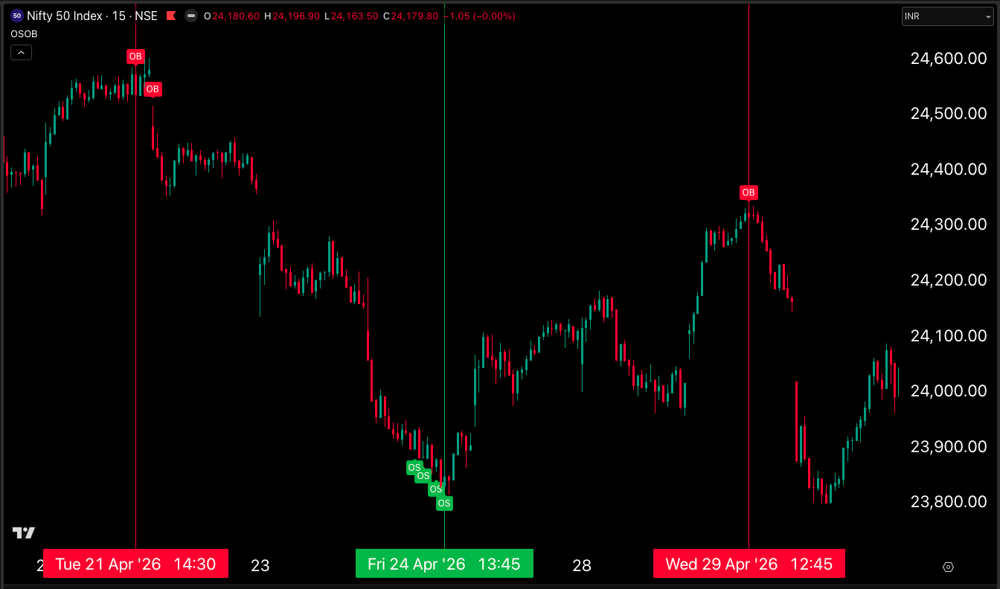
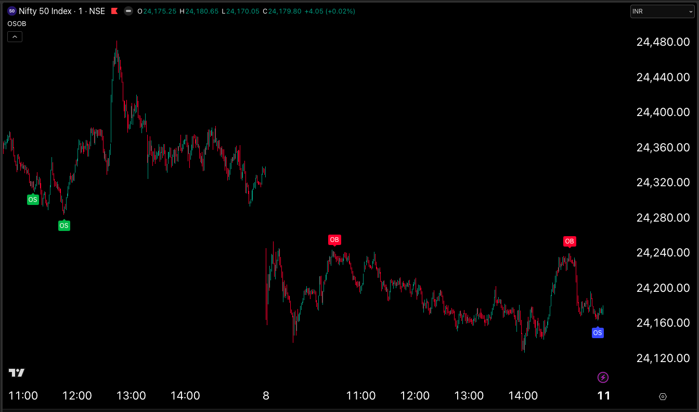
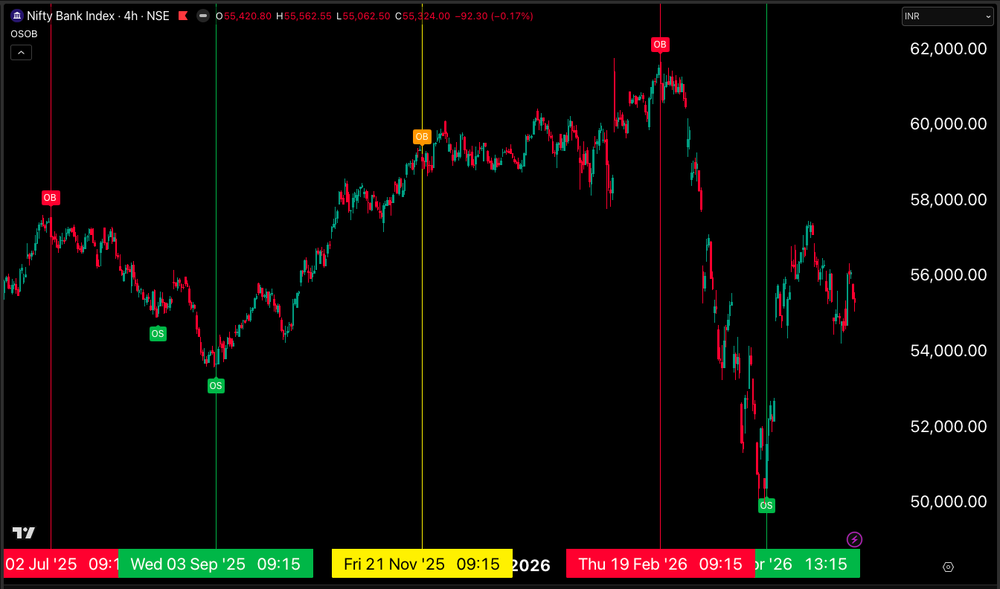
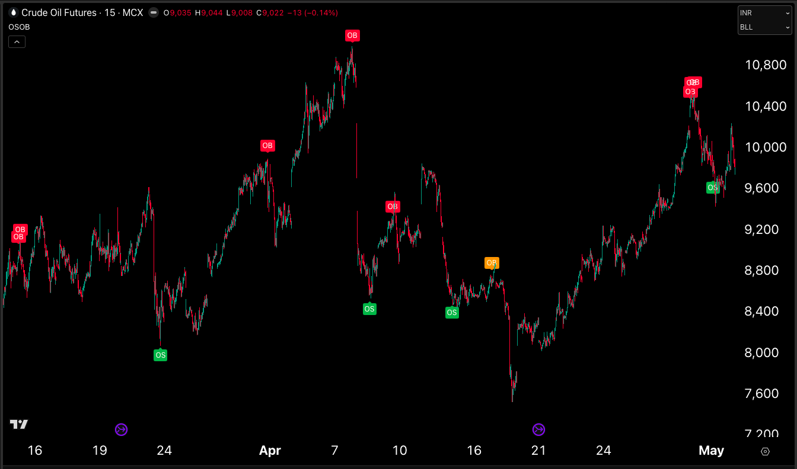

OSOB
Reversal Zone Indicator
Highlights potential overbought and oversold reversal zones directly on your chart using confirmation-based signals. Alert-friendly, multi-timeframe compatible, and built for disciplined traders.
Clear reversal signals, no clutter
OSOB identifies potential overbought and oversold zones and marks them on confirmed bars only, reducing noise and false triggers.
Chart Overlay Labels
OB (Overbought) and OS (Oversold) markers appear directly on price action when conditions align, giving you instant visual context.
Confirmation-Based
Signals print only on confirmed bars, so you're not reacting to unfinished candles or mid-bar volatility.
Alert Support
Set TradingView alerts for OB or OS signals and get notified the moment a potential setup forms.
Multi-Timeframe Use
Use OSOB on 1-minute, 15-minute, daily, or any timeframe. The logic adapts to your trading style.
OSOB in action
Real TradingView charts showing OB and OS signals across different markets and timeframes.




Trade with context, not impulse
OSOB is a timing and confirmation tool, not a standalone entry system. Use it as part of a broader analytical workflow.
Read the broader context first
Check trend, support/resistance, and market structure before acting on any signal. OSOB works best when aligned with existing bias.
Wait for the signal on a confirmed bar
When an OB or OS label prints, it means the bar has closed and conditions were met. This reduces false triggers from mid-candle noise.
Validate with price action
Look for rejection wicks, volume confirmation, or supporting patterns. The signal is a guide, not a mandate.
Define your risk and execution
Set stop-loss, target, and position size based on your strategy. OSOB highlights zones; you manage the trade.
What OSOB is NOT
To use this tool effectively, understand its boundaries.
Not a Standalone System
OSOB does not provide entry, exit, or risk management rules. It highlights potential reversal zones for you to evaluate within your own strategy.
Not Predictive
Labels indicate that historical conditions have aligned. They do not guarantee reversals or predict future price movement.
Not Immune to Trends
Overbought markets can stay overbought during strong trends. Always check higher-timeframe structure before counter-trend trades.
Not Financial Advice
This is an analytical tool for educational and informational use. All trading decisions and their outcomes are your responsibility.
Ready to add OSOB to your toolkit?
Access is included with your OpChain subscription or available separately.
Built for real-time trading
Mobile & Desktop Alerts
Receive push notifications via TradingView's mobile app or browser alerts so you never miss a setup.
Any Market, Any Timeframe
Works on stocks, forex, crypto, commodities — wherever TradingView data is available.
Customizable Settings
Adjust sensitivity and confirmation logic to match your risk tolerance and trading style.
Common Questions
What does OSOB actually do?
OSOB highlights potential overbought and oversold reversal zones by printing labels on confirmed bars when internal conditions align. It's a visual aid for timing and confirmation, not a black-box system.
Do I need OpChain to use OSOB?
No. OSOB is a separate standalone indicator. However, it's included as part of the full ProHFT indicator suite for OpChain subscribers.
Can I use OSOB for intraday scalping?
Yes. OSOB works on all timeframes, including 1-minute and 5-minute charts. Just ensure you validate signals with price action and volume before entry.
How is this different from RSI or Stochastic?
OSOB uses confirmation-based logic tied to bar close, prints labels directly on the chart, and is designed for discretionary use alongside your strategy — not as a mechanical oscillator.
Will OSOB work in strong trends?
Overbought and oversold conditions can persist during strong directional moves. Always check higher-timeframe context before taking counter-trend positions.
Is the core logic disclosed?
No. The internal calculation framework is proprietary and not shared publicly. The indicator is provided as-is for use within TradingView.
Can I backtest OSOB signals?
Labels appear on confirmed bars, so historical signals are visible on the chart. However, this is an analytical aid, not a backtestable strategy with defined rules.
What markets does OSOB support?
Any market with TradingView data: stocks, indices, forex, crypto, commodities, futures. The logic is market-agnostic.
Trade smarter with OSOB
Add confirmation-based reversal signals to your chart. Request access now.
Request Access →